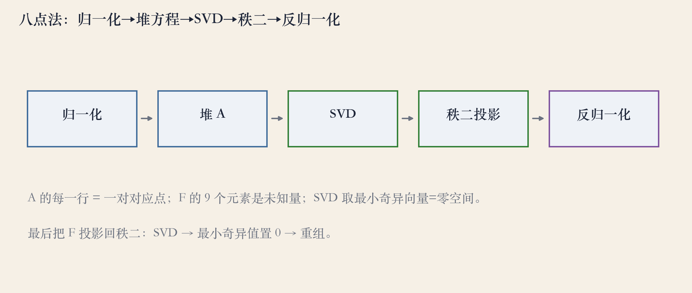
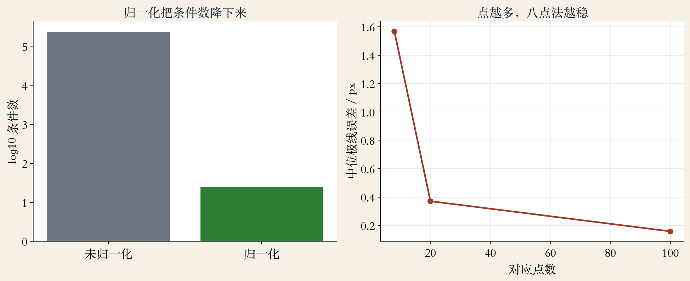
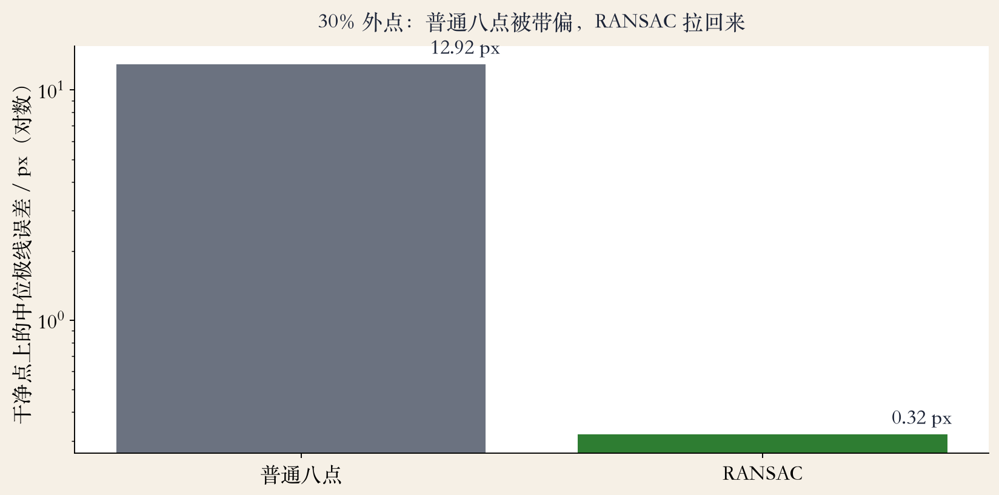

线性解 · 八点法
八点法：用 8 个点解矩阵
- 给定至少 8 对匹配点，解 F 或 E。
- 每对匹配写一个方程，堆成线性系统。
- 用 SVD 取零空间，差一个尺度。
- 不要求初值，可作粗解再精化。
依据：原书第 705 页
流程 · 五步
五步管线
- 归一化两幅图的点。
- 每对匹配堆一行，得到 N×9 的 A。
- SVD 取最小奇异向量，重组 F。
- 秩二投影后，再反归一化。
依据：原书第 705–706 页

八点法五步：归一化→堆 A→SVD→秩二→反归一化｜程序生成，未用教材或论文原图
归一化 · Hartley
归一化：数值能不能用的关键
- 像素乘积项会放大噪声，尺度很差。
- Hartley：平移到质心，方差归一。
- 未归一化时，大坐标点主导 SVD。
- 归一化后，条件数从几十万降到几十。
依据：原书第 705–706 页
堆方程 · 九未知
堆方程：九未知与零空间
- 每对匹配给一行关于 E 九元素的方程。
- N 对点堆成 N×9 矩阵，解是零空间。
- 9 个未知量、尺度任意，自由度是 8。
- 点多时取最小奇异向量，等价最小二乘。
依据：原书第 705 页
未知量
3×3 矩阵 9 个元素
整体尺度任意
解的是矩阵，不是相机
秩二 · 投影
秩二：把解投影回去
- 理论上 F/E 的秩是 2。
- 噪声让矩阵满秩，第三个奇异值非零。
- 再做 SVD，把最小奇异值置零。
- 投影后极点仍是零空间向量。
依据：原书第 706 页
七点 · 三次方程
七点法：三次方程
- E 秩亏，7 对点就够。
- 解空间二维：E = αE0 + (1−α)E1。
- 再用 det(E)=0 得三次方程，最多三根。
- 多解要拿额外点验证。
依据：原书第 706–707 页
五点 · 十次多项式
五点法：十次多项式
- 五点法要求十次多项式的根。
- 5 对点就能出解，假设相机已标定。
- 外点很多、匹配很贵时更合适。
- 实现要处理数值稳定性和 cheirality。
依据：原书第 707 页
五点法
解的是 E
适合 RANSAC 最小解
之后还要精化
RANSAC · 采样预算
RANSAC：采样预算
- 迭代次数由样本大小、内点率、成功率决定。
- 内点率 50%、成功率 99%：k8=1177。
- 七点法 588 次，五点法 146 次。
- 少点让采样更便宜，外点率越高差距越大。
依据：原书第 707 页
实验 · 条件数与点数
看图：归一化与点数
- 未归一化条件数 23.4 万，归一化后 24.3。
- 中位极线误差 0.539 降到 0.488 像素。
- 点数 8/20/100，留出集误差 1.57/0.37/0.16。
- 条件数降四个数量级，误差降得不多。
依据：本集实验

条件数 23.4 万→24.3；点数 8/20/100 误差 1.57/0.37/0.16 px｜程序生成，未用教材或论文原图
实验 · 30% 外点
看图：外点与 RANSAC
- 30% 外点：普通八点中位误差 12.9 像素。
- RANSAC 采样 600 次、内点重估后 0.32 像素。
- 阈值按像素噪声设，通常 1 到 3 像素。
- 采样次数按内点率算，不能固定 100 次。
依据：本集实验

30% 外点：普通八点 12.9 px，RANSAC 0.32 px｜程序生成，未用教材或论文原图
失败边界 · 五种坑
失败边界：五种情况
- 点太少或共面、共线，A 秩不足。
- 纯旋转视差为零，E 退化。
- 外点多不做 RANSAC 必崩。
- 不归一化条件数爆炸，解被远点绑架。
依据：原书第 705–707 页
收束 · 下一集
收束：从矩阵到相机
- 八点法：堆线性方程，SVD 取零空间。
- 归一化和秩二投影决定能不能用。
- RANSAC 挑外点，内点重估保精度。
- 下一集：位姿恢复与三角化。
依据：原书第 705–707 页
下一集
分解 R 和 t
三角化第一批点
重投影误差评估